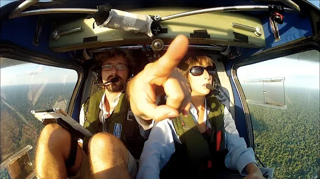
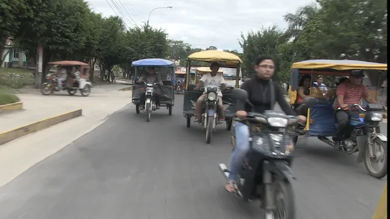

Des heures à survoler cette immensité verte ! Au début il n'y avait que de la forêt sous nos ailes... il vaut mieux éviter la panne moteur, ici.
Puis progressivement, devant nous, apparaissent les premières habitations. Puis de plus en plus denses.

Et finalement, à force de naviguer entre les averses, qui chaque fois grignotaient un petit peu plus notre hélice (qui n'est pas blindée !), nous arrivons enfin de l'autre côté : Tarapoto ! Cette ville péruvienne sur les contreforts Est des Andes, on l'a bien méritée !

Ici, un important trafic de motocarro, mototaxi, et autres petits triporteurs. Certains semblent directement réalisés à partir de deux motos soudées l'une à l'autre !